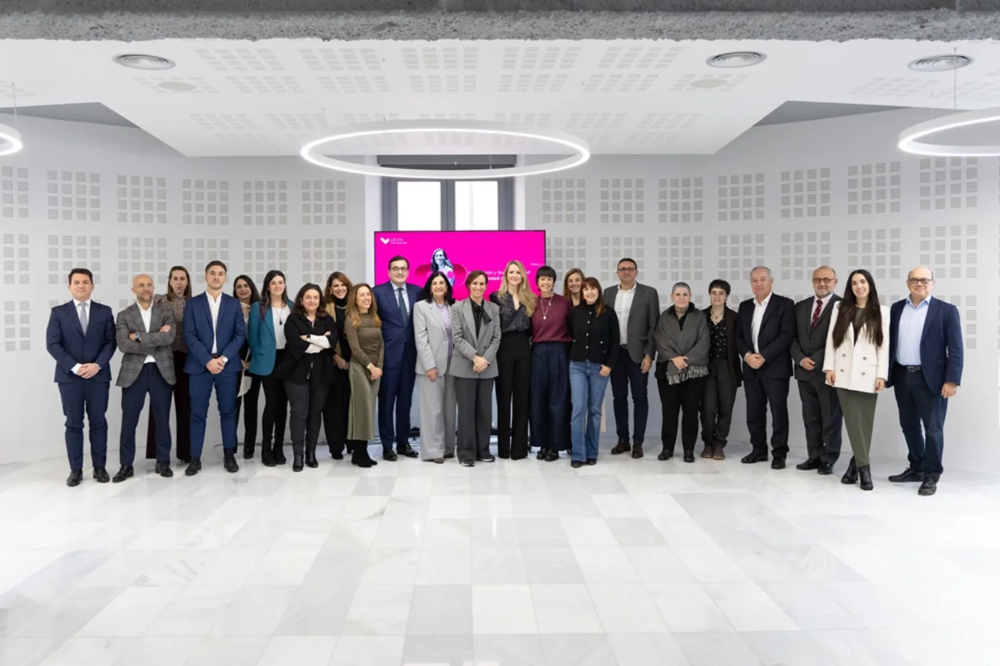
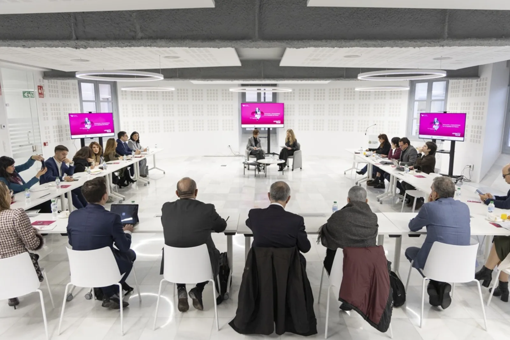

Serie GEPAC – Desayuno LevinTalks GEPAC participa en los Desayunos LevinTalks junto a la ministra de Sanidad para abordar los retos del sistema sanitario
Serie GEPAC – Desayuno LevinTalks GEPAC participa en los Desayunos LevinTalks junto a la ministra de Sanidad para abordar los retos del sistema sanitario
El Grupo Español de Pacientes con Cáncer (GEPAC) participó el pasado 5 de febrero de 2026 en una nueva edición de los Desayunos LevinTalks, un espacio de diálogo que reunió en Madrid a representantes institucionales, organizaciones sanitarias, asociaciones de pacientes y agentes clave del sector salud. El encuentro contó con la presencia de la ministra de Sanidad, Mónica García, en un formato cercano que favoreció el intercambio de ideas sobre los principales desafíos que marcarán el futuro del sistema sanitario en España. La jornada se celebró en la sede del Ilustre Colegio Oficial de Médicos de Madrid (ICOMEM), un entorno institucional que permitió abordar cuestiones estratégicas desde una perspectiva plural y constructiva. Durante la conversación se trataron temas de máxima actualidad, entre ellos la Ley de Gestión Pública e Integridad del Sistema Nacional de Salud, la gestión de la colaboración público-privada, el impulso de una Ley de Medicamentos Críticos, el posicionamiento de España como referente internacional en ensayos clínicos y el desarrollo de la futura Ley de Organizaciones de Pacientes, una iniciativa especialmente relevante para avanzar hacia una participación más estructurada de la sociedad civil en la toma de decisiones sanitarias. La participación de asociaciones de pacientes en foros de este nivel resulta fundamental para trasladar la experiencia real de quienes conviven con la enfermedad y contribuir al diseño de políticas públicas más centradas en la persona. Para GEPAC, estos espacios representan una oportunidad para reforzar el diálogo institucional, fomentar la escucha activa y seguir avanzando hacia un modelo sanitario más equitativo, innovador y sostenible. El encuentro reunió a numerosas entidades del ámbito sanitario, científico y empresarial, cuya diversidad de perspectivas enriqueció el debate y favoreció un intercambio constructivo sobre el presente y el futuro de la sanidad. Desde GEPAC se valora muy positivamente la celebración de iniciativas como los Desayunos LevinTalks, que impulsan el consenso y la colaboración entre los distintos actores del sistema. Continuar promoviendo estos espacios será clave para responder de forma eficaz a las necesidades reales de los pacientes y fortalecer una atención sanitaria de mayor calidad.
